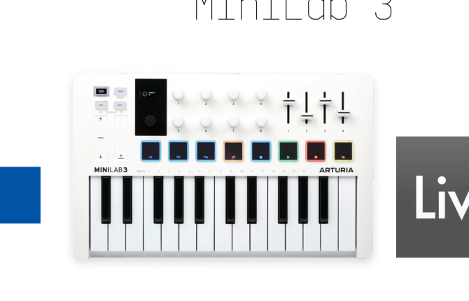
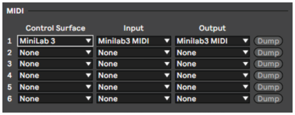
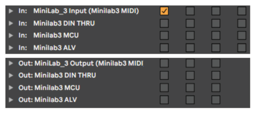
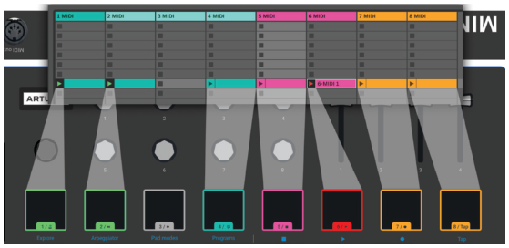
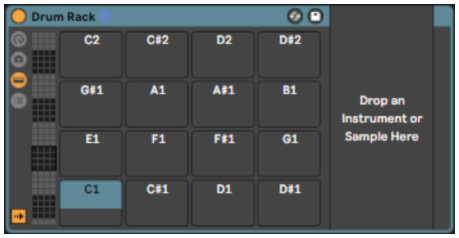
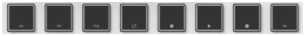
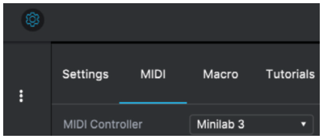

Giới thiệu & đăng ký
Cẩm nang này bao quát toàn bộ tính năng và cách vận hành của Arturia MiniLab 3 — một bộ điều khiển MIDI (MIDI controller — bàn phím điều khiển nhạc cụ ảo) đầy đủ tính năng, được thiết kế để làm việc với bất kỳ phần mềm DAW hay plug-in nào bạn đang sở hữu. Dù trong phòng thu, trên đường diễn hay tại nhà, chúng tôi tin rằng MiniLab 3 sẽ trở thành công cụ không thể thiếu trong bộ đồ nghề của bạn.

Hãy đăng ký MiniLab 3 của bạn càng sớm càng tốt! Ở mặt dưới máy có một tem dán chứa số serial (số seri) và mã kích hoạt (unlock code) của thiết bị. Bạn sẽ cần chúng khi đăng ký trực tuyến tại www.arturia.com. Hãy giữ thẻ đăng ký kèm máy ở nơi an toàn.
Đăng ký MiniLab 3 mang lại những lợi ích sau:
- Các ưu đãi riêng dành cho chủ sở hữu MiniLab 3. Là chủ sở hữu đã đăng ký, bạn còn được nhận bộ phần mềm độc quyền gồm:
- Arturia Analog Lab Intro — chứa hàng nghìn nhạc cụ và âm thanh dùng được ngay
- Quyền truy cập các phiên bản mới nhất của phần mềm đi kèm: Ableton Live Lite, đàn piano Native Instruments The Gentleman và UVI Model D, cùng các gói đăng ký Loopcloud và Melodics.
MIDI Control Center
Ứng dụng MIDI Control Center — ứng dụng đồng hành, viết tắt MCC được tải miễn phí từ trang Downloads & Manuals của Arturia. Hãy cài ngay bây giờ; bạn sẽ cần ứng dụng này khi cập nhật firmware và chỉnh các cài đặt của MiniLab 3.
Arturia Software Center (ASC)
Nếu chưa cài ASC, hãy truy cập trang Arturia Downloads & Manuals. Tìm mục Arturia Software Center ở gần đầu trang, rồi tải bản cài đặt phù hợp với hệ điều hành của bạn (Windows hoặc macOS). ASC là trình khách kết nối với tài khoản Arturia của bạn, cho phép quản lý toàn bộ giấy phép, bản tải về và bản cập nhật tại một nơi.
Sau khi cài xong, hãy làm theo các bước sau:
- Khởi động Arturia Software Center (ASC).
- Đăng nhập tài khoản Arturia từ giao diện ASC.
- Kéo xuống phần My Products trong ASC.
- Nhấn nút Activate bên cạnh phần mềm bạn muốn bắt đầu dùng (ở đây là Analog Lab Intro).
Đơn giản chỉ có vậy!
Lưu ý: MiniLab 3 rất dễ dùng và bạn có thể sẽ bắt đầu nghịch ngay khi mở hộp. Tuy nhiên, dù bạn là người dùng kỳ cựu, hãy đọc hết cẩm nang này — chúng tôi mô tả rất nhiều mẹo hữu ích giúp bạn khai thác tối đa chiếc máy. Bạn cũng có thể tải MiniLab 3 Cheat Sheet (bảng tóm tắt phím tắt) trong quá trình đăng ký.
Chúng tôi chắc chắn MiniLab 3 sẽ là một công cụ mạnh mẽ trong hệ thống của bạn, và hy vọng bạn sẽ khai thác nó hết tiềm năng. Chúc bạn làm nhạc vui vẻ!
— Đội ngũ Arturia
1. Chào mừng đến với MiniLab 3
1.1. MiniLab 3 là gì?

MiniLab 3 là một bàn phím điều khiển MIDI compact. Đừng để kích thước nhỏ đánh lừa bạn — nó chứa đựng rất nhiều tính năng thường chỉ thấy trên những bàn phím lớn hơn và đắt tiền hơn. Bạn sẽ chơi trên bàn phím 25 phím slim-key nhạy lực (velocity-sensitive — âm lượng thay đổi theo lực gõ) cùng 8 pad biểu diễn có đèn nền, cảm ứng cả velocity lẫn aftertouch.
So với người tiền nhiệm MiniLab MkII, chúng tôi đã thiết kế lại và mở rộng giao diện điều khiển: 8 núm encoder vô tận (endless encoder) giờ được kết hợp thêm 4 fader, chưa kể núm encoder chính có điểm khấc (detented — có cảm giác bước khi xoay) kiêm nút chọn, đi cùng màn hình OLED sáng.
Ngay khi mở hộp, MiniLab 3 đã tích hợp chặt với phần mềm Analog Lab của chúng tôi: bạn có thể duyệt preset và chỉnh tham số mà không cần chạm vào chuột.
MiniLab 3 còn tự động nhận diện và điều khiển các DAW phổ biến gồm Ableton Live, Apple Logic Pro, Reason Studios Reason, Bitwig Studio và Image-Line FL Studio. (Một số DAW như Steinberg Cubase được hỗ trợ qua giao thức Mackie Control Universal.) Bạn có thể điều khiển transport của DAW bằng pad, dùng các núm xoay để chỉnh tham số plug-in, và chỉnh âm lượng, send, pan của track bằng 4 fader của MiniLab 3.
MiniLab 3 còn có hai dải cảm ứng pitch/modulation độc đáo cùng một arpeggiator tích hợp mang đầy chất synth cổ điển.
Ngoài Analog Lab Intro, MiniLab 3 kèm theo giấy phép Ableton Live Lite — phiên bản nhập môn nhưng mạnh mẽ của DAW đã cách mạng hóa sản xuất và biểu diễn nhạc theo kiểu clip. Bạn có thể kích hoạt clip bằng pad, chỉnh plug-in đang mở bằng các encoder, và nhiều hơn nữa.
Là chủ sở hữu MiniLab 3, bạn còn sở hữu Native Instruments The Gentleman (đàn piano thẳng acoustic sampled chất lượng), UVI Model D (đại piano hòa nhạc Đức), cùng gói đăng ký Loopcloud và Melodics.
Trên hết, phần mềm MIDI Control Center của Arturia (tải miễn phí) cho phép bạn ánh xạ (map — gán tham số vào núm bấm) tham số trực tiếp vào các điều khiển vật lý của MiniLab 3 để tạo cấu hình tùy chọn riêng. Bạn có thể lưu lại thành user program và gọi ra ngay từ phần cứng MiniLab 3.
Ví dụ: bạn muốn pad chơi một thang nốt bass tùy chọn — dùng âm thanh khác trên kênh MIDI khác — trong khi bạn solo hoặc chơi hợp âm trên bàn phím? Chẳng thành vấn đề!
Lưu ý: Để biết thêm về MIDI Control Center — phần mềm đồng hành tải từ website Arturia — hãy tham khảo manual riêng của MIDI Control Center.
Dành cho nhạc công hay di chuyển, người biểu diễn trên laptop phải chen chúc trong booth DJ chật chội, người làm home studio với mặt bàn hạn chế, và vô số nhà thám hiểm âm thanh khác mà chúng tôi chưa nghĩ tới: MiniLab 3 đơn giản là bộ điều khiển MIDI “nhỏ mà có võ” nhất hành tinh.
1.2. Tóm tắt tính năng MiniLab 3
- Bàn phím 25 phím slim-key nhạy lực (velocity-sensitive).
- 8 pad RGB nhạy lực và nhạy áp suất (poly pressure).
- 2 bank pad — tổng cộng 16 pad chức năng.
- Núm encoder chính có điểm khấc, nhấn được để điều hướng.
- Màn hình OLED tương phản cao, nhìn rõ cả dưới ánh sáng mạnh.
- 8 núm encoder vô tận (endless encoder).
- 4 fader.
- Dải cảm ứng thấp (touch-strip) cho pitch-bend và modulation.
- Nút Shift mở ra các chức năng thay thế.
- Nút Hold cho sustain “nhàn tay” (và nhàn chân).
- Chức năng đổi octave và transpose theo nửa cung.
- Arpeggiator đầy đủ tính năng kiểu synth cổ điển.
- Chord mode ghi nhớ và chơi hợp âm người dùng từ một phím.
- Cấp nguồn qua USB-C tiết kiệm điện; thậm chí chạy được từ iPad.
- MIDI qua USB-C và cổng xuất MIDI 5 chân chuẩn.
- Cầu vào TRS 6,35mm (1/4″) nhận pedal sustain, pedal công tắc, hoặc pedal expression.
- Phần mềm đi kèm: Arturia Analog Lab Intro, Ableton Live Lite, piano Native Instruments The Gentleman và UVI Model D, gói đăng ký Loopcloud và Melodics.
- Cáp USB-C sang USB-A đi kèm.
An toàn & thận trọng
QUAN TRỌNG — Nghe lực: Sản phẩm và phần mềm của nó, khi dùng cùng ampli, tai nghe hoặc loa, có thể tạo mức âm thanh gây mất thính lực vĩnh viễn. ĐÍCH LÀ vận hành trong thời gian dài ở mức cao hay mức gây khó chịu. Nếu gặp suy giảm thính lực hoặc ù tai, hãy đi khám chuyên khoa thính học.
LƯU Ý — Chi phí dịch vụ: Chi phí dịch vụ phát sinh do không nắm rõ cách hoạt động của một chức năng (khi sản phẩm vẫn hoạt động đúng thiết kế) không thuộc diện bảo hành của nhà sản xuất và là trách nhiệm của chủ sở hữu. Hãy nghiên cứu kỹ cẩm nang này và hỏi đại lý trước khi yêu cầu dịch vụ.
Các lưu ý an toàn bao gồm (nhưng không giới hạn ở):
- Đọc và hiểu toàn bộ hướng dẫn.
- Luôn tuân theo các hướng dẫn in trên thiết bị.
- Trước khi vệ sinh thiết bị, luôn rút cáp USB. Khi vệ sinh, dùng khăn mềm và khô. Không dùng xăng, cồn, acetone, turpentine hay bất kỳ dung môi hữu cơ nào; không dùng chất tẩy lỏng, xịt hoặc khăn quá ướt.
- Không dùng thiết bị gần nước hoặc nơi ẩm ướt như bồn tắm, bồn rửa, bể bơi hoặc nơi tương tự.
- Không đặt thiết bị ở vị trí không ổn định có thể bị đổ.
- Không đặt vật nặng lên thiết bị. Không chặn các khe hở hoặc lỗ thông gió; những vị trí này giúp không khí lưu thông, tránh quá nhiệt. Không đặt thiết bị gần lỗ thoát nhiệt hoặc nơi không khí không lưu thông.
- Không mở thùng máy hay nhét bất kỳ vật gì vào thiết bị — có thể gây cháy hoặc giật điện.
- Không làm đổ bất kỳ chất lỏng nào lên thiết bị.
- Luôn mang thiết bị đến trung tâm dịch vụ có chuyên môn. Bạn sẽ mất bảo hành nếu tự mở và tháo nắp máy, và lắp lại sai cách có thể gây giật điện hoặc hỏng hóc khác.
- Không sử dụng thiết bị khi có sấm sét; có thể gây giật điện từ xa.
- Không để thiết bị dưới nắng gắt.
- Không sử dụng thiết bị khi có rò rỉ khí gas gần đó.
- Arturia không chịu trách nhiệm về bất kỳ hư hỏng hay mất dữ liệu nào do vận hành thiết bị không đúng cách gây ra.
2. Cài đặt
Việc đầu tiên cần làm khi nhận MiniLab 3 — sau khi hoàn tất đăng ký — là cập nhật firmware. Arturia định kỳ phát hành bản cập nhật firmware để bổ sung tính năng và cải thiện hiệu năng.
Để tiến hành cập nhật, trước tiên bạn cần tải và cài MIDI Control Center (MCC) — phần mềm đồng hành mạnh mẽ được thiết kế để làm việc với phần cứng của chúng tôi — từ trang Downloads & Manuals.
Sau đó, làm theo các bước sau để nâng cấp firmware cho MiniLab 3:
- Tải firmware mới nhất từ tab Resources của trang sản phẩm MiniLab 3, hoặc từ trang Downloads & Manuals trên website (tìm
MiniLab 3). - Khởi động MIDI Control Center.
- Chắc chắn rằng MiniLab 3 được chọn dưới mục Device trong MCC. Nhấp vào ô hiển thị phiên bản firmware:

- Nhấn Upgrade trong hộp thoại hiện ra, rồi trỏ đến file firmware trên máy tính và chọn nó. Bốn nút trên máy sẽ sáng xanh, chạy vòng lặp.
- Làm theo phần còn lại của hướng dẫn trên màn hình. Khi nạp firmware xong, MiniLab 3 sẽ tự khởi động lại và sẵn sàng sử dụng.
Khi MiniLab 3 đã sẵn sàng, bạn có thể bắt đầu dùng nó để điều khiển các nhạc cụ ảo, chẳng hạn Analog Lab V của chính chúng tôi (xem chương 5).
Lưu ý: Để biết thêm về cách MCC hoạt động với MiniLab 3, hãy xem manual riêng trong mục MiniLab 3 của trang Downloads & Manuals.
3. Tổng quan phần cứng
3.1. Mặt trước
Các điều khiển trên mặt trước của MiniLab 3 như sau:

| # | Bộ phận | Mô tả |
|---|---|---|
| 1 | Nút Shift | Mở ra các chức năng thay thế (xem 4.1). |
| 2 | Nút Hold | Khi bật, giữ duy trì các nốt chơi từ bàn phím (không áp dụng cho pad). |
| 3 | Nút Octave | Đưa bàn phím lên/xuống một octave (xem 4.2). |
| 4 | Touch Strips | Hai dải cảm ứng mỏng đóng vai trò “bánh xe” pitch-bend và modulation (xem 4.3). |
| 5 | Màn hình OLED | Hiển thị tên tham số, giá trị và mọi thông tin trạng thái của MiniLab 3. |
| 6 | Encoder chính (detented) | Điều hướng preset trong Analog Lab (chương 5) và thực hiện các chức năng khác trong DAW (chương 6). Đồng thời là nút chọn nhấn được. |
| 7 | Núm encoder vô tận | Điều khiển tham số trong phần mềm, ví dụ tham số của nhạc cụ. |
| 8 | Fader | Điều khiển tham số trong phần mềm, ví dụ tham số của nhạc cụ. |
| 9 | Pad | Để finger drumming, chơi nốt MIDI, truy cập chức năng của MiniLab 3 và điều khiển transport DAW. Nhạy lực và nhạy áp suất (xem 4.4). |
| 10 | Bàn phím MIDI | Bàn phím 25 phím slim-key nhạy lực. Đường cong velocity chỉnh được trong ứng dụng MIDI Control Center. |
3.2. Mặt sau
Các cổng kết nối trên mặt sau MiniLab 3:

| # | Cổng | Mô tả |
|---|---|---|
| 1 | Kensington Lock | Ổ khóa laptop Kensington chuẩn, chống trộm. |
| 2 | MIDI Out | Cổng MIDI xuất 5 chân DIN để điều khiển module synth phần cứng. Cũng có thể dùng làm MIDI Thru. |
| 3 | Control Pedal In | TRS 6,35mm; nhận pedal sustain, pedal công tắc hoặc pedal điều khiển liên tục (expression pedal). |
| 4 | Cổng USB-C | Cấp nguồn cho thiết bị và giao tiếp với máy tính hoặc phần cứng ngoài khác. |
Velocity (độ mạnh gõ): Cả bàn phím MIDI lẫn pad của MiniLab 3 đều nhạy với lực chơi — gõ mạnh hơn để âm lượng lớn hơn.
Pressure Sensitivity (độ nhạy áp suất): Chơi một pad rồi ép mạnh hơn sẽ gửi dữ liệu Pressure, có thể kích hoạt nhiều thay đổi modulation (filter, âm lượng…). Độ nhạy áp suất còn được gọi là Aftertouch.
3.3. Hiển thị giá trị điều khiển
Theo mặc định, màn hình OLED chính sẽ hiển thị trong chốc lát hình ảnh của điều khiển mà bạn chạm vào, cùng giá trị điều khiển đó gửi đi khi bạn di chuyển nó. Ví dụ, đây là những gì hiển thị khi bạn xoay một núm:


Khi bạn đánh một pad, màn hình sẽ hiển thị trước tiên velocity ban đầu. Nếu sau đó bạn ép thêm, màn hình sẽ hiển thị giá trị áp suất đó.
4. Vận hành MiniLab 3
4.1. Chức năng Shift
Giữ Shift trong khi vận hành một số điều khiển hoặc bấm pad sẽ kích hoạt chức năng thay thế. Bảng sau tóm tắt các chức năng đó; chi tiết sẽ được trình bày trong các phần kế tiếp.
| Điều khiển | Chức năng khi giữ Shift |
|---|---|
| Nút Hold | Bật/tắt Chord Mode (xem 4.8). Nhấn giữ lâu khi đang giữ Shift sẽ vào chế độ Create Chord. |
| Nút Octave | Transpose bàn phím lên/xuống theo nửa cung. |
| Encoder chính | Thay đổi tùy phần mềm đang kết nối. |
| Pad 1 | Bật/tắt Arpeggiator (xem 4.5). Nhấn giữ pad này khi giữ Shift sẽ vào Arp Edit mode. |
| Pad 2 | Chuyển pad giữa bank A và bank B. |
| Pad 3 | Chuyển chế độ MiniLab 3 giữa điều khiển nhạc cụ Arturia và điều khiển DAW (chương 6). Từ đây bạn cũng chuyển giữa các User Program tự tạo. |
| Pad 4–7 | Điều khiển transport của DAW (Loop on/off, Stop, Play, Record). |
| Pad 8 | Nhập Tap Tempo (xem 4.6). |
| Bàn phím | Phím F octave đầu đến G# octave thứ hai chọn kênh phát MIDI 1–16. |
4.2. Octave lên/xuống và Transpose

Để dịch bàn phím lên hoặc xuống một octave, bấm Oct+ hoặc Oct−. Bạn có thể transpose xuống 4 octave và lên 4 octave. Khi bàn phím đang dịch octave, nút sáng màu trắng.
Để transpose bàn phím lên/xuống một nửa cung, giữ Shift và bấm một trong hai nút Octave. Khi đang transpose nửa cung, nút sáng màu xanh dương.
Khi cả octave lẫn nửa cung cùng hiệu lực, nút nhấp nháy xen kẽ trắng và xanh.
Màn hình OLED sẽ phản ánh thao tác của bạn trong cả hai trường hợp. Dịch octave và transpose chỉ áp dụng cho bàn phím, không áp dụng cho pad. Pad gửi số nốt MIDI có thể chỉnh trong ứng dụng MIDI Control Center.
Mẹo: Bấm đồng thời Oct+ và Oct− để reset mọi dịch octave và transpose.
4.3. Touch Strips

Dải pitch-bend bên trái hoạt động như bánh xe pitch có lò hồi: khi bạn nhấc ngón tay, “bánh xe” tự về vị trí giữa. Phạm vi bend chỉnh được trong MIDI Control Center (xem manual riêng). Ứng dụng MCC cho phép bạn tùy biến chức năng của gần như mọi điều khiển vật lý trên MiniLab 3 hay bộ điều khiển Arturia khác.
Di chuyển ngón tay lên dải modulation bên phải sẽ tăng lượng modulation. Giống như bánh xe modulation trên synth, giá trị giữ nguyên nơi bạn để lại khi nhấc ngón tay, cho tới khi bạn tự quệt dải về 0.
Dải modulation mặc định gửi MIDI CC 1 (số điều khiển quen thuộc cho modulation), nhưng cũng đổi được trong ứng dụng MCC.
Mọi chuyển động trên hai dải này đều được phản ánh trên màn hình OLED.
4.4. Pads

Tám pad nhạy lực và poly pressure của MiniLab 3 phục vụ nhiều mục đích. Ở trạng thái mặc định, chúng gửi nốt MIDI trên kênh 10 — kênh thường dùng nhất cho trống trong DAW hoặc synth đa âm sắc.
4.4.1. Chức năng phụ (Secondary functions)
Giữ Shift, các pad sẽ thực hiện tác vụ thay thế. Lớp tác vụ phổ biến nhất đã mô tả trong bảng Chức năng Shift ở mục 4.1: Shift + Pad 1 bật/tắt Arpeggiator, v.v.
Khi giữ Shift, pad 1–3 sáng xanh dương. Pad 4–7 sáng theo chức năng transport DAW: vàng hổ phách cho loop mode, trắng cho stop, xanh lá cho play, đỏ cho record.

Giữ Shift và bấm Pad 2 để chuyển giữa bank pad A và B. Bank B gửi các nốt MIDI khác, cũng trên kênh 10. Số nốt mặc định — hoàn toàn thay đổi được cho User Mode trong ứng dụng MCC — là:
| Bank | 1 | 2 | 3 | 4 | 5 | 6 | 7 | 8 |
|---|---|---|---|---|---|---|---|---|
| A | 36 (C1) | 37 (C#1) | 38 (D1) | 39 (D#1) | 40 (E1) | 41 (F1) | 42 (F#1) | 43 (G1) |
| B | 44 (G#1) | 45 (A1) | 46 (A#1) | 47 (B1) | 48 (C2) | 49 (C#2) | 50 (D2) | 51 (D#2) |
4.4.2. Pad và chọn Program
MiniLab 3 có vài chế độ vận hành chính: ARTURIA, DAW, cùng 5 User Program tùy chỉnh do bạn tạo ra. Giữ Shift và bấm Pad 3 để chuyển giữa chúng.
- Chế độ ARTURIA: Tự động nhận diện Analog Lab đang mở. Mọi điều khiển được ánh xạ tự động để điều khiển Analog Lab.
- Chế độ DAW: Để điều khiển phần mềm trạm sản xuất âm thanh kỹ thuật số. Các DAW được hỗ trợ sẽ được ánh xạ tự động. Với DAW khác, các nút transport vẫn hoạt động.
- User Preset: MiniLab 3 lưu được tối đa 5 User Program — bản ánh xạ điều khiển tùy chỉnh bạn tạo trong ứng dụng MIDI Control Center (xem manual riêng). User Preset có thể bật/tắt riêng lẻ trong Device Settings của MCC. Chương 5 sẽ nói kỹ hơn; còn bây giờ, chỉ cần biết rằng giữ Shift + Pad 3 cũng sẽ lần lượt quay vòng qua các user preset đang bật bên cạnh hai chế độ ARTURIA và DAW.
4.5. Arpeggiator
MiniLab 3 có một Arpeggiator (trình tạo arpeggio — tự chơi lần lượt từng nốt của hợp âm bạn đang giữ) vui nhộn và linh hoạt, mô phỏng theo các arpeggiator trên synth cổ điển, giúp bạn tạo ra những pattern lăn tăn, sục sạo từ hợp âm đang giữ.
Arpeggiator có mặt trong nhiều mẫu synthesizer. Nó nhận các hợp âm chơi trên bàn phím và chuyển chúng thành arpeggio. Một arpeggiator thường có các điều khiển về Tốc độ (Speed/Rate), Phạm vi (Range, tính theo octave), Chế độ (Mode — pattern đi lên, xuống, lên/xuống v.v.) và Hold (tiếp tục chơi arpeggio sau khi nhả phím).
Dữ liệu arpeggiator được phát dưới dạng MIDI qua cổng USB-C và/hoặc cổng MIDI 5 chân, tùy chọn nào được bật trong thiết lập MIDI của phần mềm chủ (host).
4.5.1. Bật và tắt Arpeggiator
Để bật/tắt arpeggiator, giữ Shift và bấm Pad 1. Màn hình MiniLab sẽ phản ánh trạng thái trong chốc lát:

Khi Arpeggiator đang bật, màn hình (ở ví dụ này đang hiển thị tên preset từ Analog Lab) sẽ hiện một biểu tượng bốn chấm nhỏ ở góc dưới phải:

Arpeggiator chỉ được kích hoạt bởi bàn phím, không phải pad.
Để biết Arpeggiator đang bật hay tắt, hãy bấm nút Shift: pad Arp sáng xanh nhạt = Arpeggiator bật; pad Arp xanh đậm = Arpeggiator tắt.
Khi Arpeggiator đang bật, bạn vẫn có thể dùng pad để kích hoạt âm thanh.
Trong Arpeggiator Edit mode, bạn có thể khởi động/dừng Arpeggiator bằng cách xoay núm encoder 1 hoặc núm encoder chính: màn hình đổi từ Off sang On và ngược lại.
4.5.2. Vào và ra khỏi Arpeggio Edit mode
Vào Arpeggio Edit mode: giữ Shift và nhấn giữ nút Arp (Pad 1) trong một giây.
Rời Arpeggio Edit mode: giữ Shift và bấm nhanh nút Arp.
Trong Arpeggiator Edit mode, màn hình luôn hiển thị như sau:

Phân biệt hai khái niệm: Chế độ Arpeggio (arp có đang chạy hay không) và chế độ Arpeggio Edit (nơi bạn chỉnh hành vi của arp) khá độc lập với nhau: Arpeggiator không tự khởi động chỉ vì bạn vào Edit mode, và thoát menu arp cũng không tắt Arpeggiator.
4.5.3. Chỉnh Arpeggiator — bằng núm Encoder chính
Xin nhắc lại hai chế độ Arpeggiator riêng biệt ở trên — Arpeggiator Play (chạy) và Arpeggiator Edit (chỉnh). Nắm được rồi, ta bắt đầu chỉnh cách Arpeggiator chơi pattern.
Giữ Shift và bấm Pad 1 để bật Arpeggiator. Sau đó giữ Shift và nhấn giữ Pad 1 một giây để vào Arpeggiator Edit mode. Màn hình lúc này sẽ như thế này:

Các tham số của Arpeggiator:
- On/Off — bật/tắt Arpeggiator.
- Mode — chọn thứ tự các nốt được chơi.
- Div (Division) — chia nhịp tương đối so với tempo chủ (master tempo).
- Swing — thêm hệ số swing cho cảm giác “chậm phách”.
- Gate — chỉnh thời gian gate của nốt, tức độ dài mỗi nốt arpeggio.
- Rate — đặt tốc độ Arpeggiator (BPM) khi Sync để Internal.
- Sync — chọn nguồn tempo chủ: đồng hồ nội bộ của MiniLab 3 (Int) hay nguồn ngoài như phần mềm/phần cứng đang kết nối (Ext).
- Oct — chọn phạm vi octave của các nốt chơi, từ 0 đến 3 octave.
Bạn dùng núm encoder chính để chọn từng tham số và đổi giá trị. Xoay núm để di chuyển giữa các tham số như sau:

Khi tới tham số mong muốn, nhấn núm để chỉnh giá trị của nó:

Xoay núm để điều chỉnh giá trị, nhấn thêm lần nữa để xác nhận và quay lại một cấp menu.
4.5.4. Chỉnh Arpeggiator — Quick Access (truy cập nhanh)
Điều hướng menu vốn là nhiệm vụ của núm encoder chính nhấn được, nhưng chúng tôi còn cài sẵn một cách chỉnh arpeggiator nhanh hơn nhiều. Khi đang trong Arpeggiator Edit mode (nhắc lại: giữ Shift và nhấn giữ Pad 1), tám núm encoder cho phép truy cập trực tiếp tức thì đến các tham số Arpeggiator. Hãy để ý bố cục hai hàng tiện lợi — vừa trên màn hình vừa trên các núm:
| Núm | Tham số Arpeggiator |
|---|---|
| 1 | On/Off |
| 2 | Mode |
| 3 | Division |
| 4 | Swing |
| 5 | Gate |
| 6 | Rate |
| 7 | Sync |
| 8 | Octave Range |
Túm bất kỳ núm nào và xoay, bạn chỉnh ngay tham số tương ứng. Màn hình hiển thị chỉnh sửa trong tích tắc rồi quay về menu Arpeggiator cha. Cách này cho phép bạn vặn vài núm liền một lúc và nghe kết quả ngay lập tức.
Bạn cần thoát Arpeggio Edit mode thì các núm mới trở lại vai trò điều khiển thường.
4.5.5. Chi tiết từng tham số Arpeggiator
Giờ hãy đi sâu vào từng tham số.
4.5.5.1. On/Off

Chỉnh mục menu này hay xoay Núm 1 đều cho hiệu quả giống giữ Shift và bấm Pad 1 — đơn giản là bật/tắt arpeggiator.
4.5.5.2. Mode

Mode quyết định thứ tự chơi các nốt arpeggio. Các lựa chọn:
- Up — chỉ chơi nốt theo thứ tự tăng dần.
- Down — chỉ chơi nốt theo thứ tự giảm dần.
- Inc (Inclusive) — chơi tăng rồi giảm, lặp lại nốt cao nhất và thấp nhất trong pattern.
- Exc (Exclusive) — chơi tăng rồi giảm, không lặp lại nốt cao nhất và thấp nhất.
- Rand (Random) — chơi tất cả nốt đang giữ theo thứ tự ngẫu nhiên.
- Order — chơi nốt đúng theo thứ tự bạn bấm phím trên bàn phím.
🎵 Dù Order linh hoạt nhất, arpeggio ngẫu nhiên lại là dấu hiệu của các ca khúc synthpop thập niên ’80 như “Rio” của Duran Duran.
4.5.5.3. Division

Cài đặt này điều khiển cách chia nhịp của Arpeggiator so với tempo chủ — dù nguồn tempo là nội bộ hay bên ngoài. Các giá trị gồm nốt 1/4, 1/8, 1/16 và 1/32, cả dạng “thẳng” lẫn triplet. Chữ T đứng sau giá trị (ví dụ “1/8T”) nghĩa là triplet.
Với Division 1/8, các nốt 1/8 được chơi đều. Với 1/8T, 3 nốt 1/8 triplet sẽ chơi. Điều này khác với Swing: Swing 67% chơi các nốt 1/8 theo phong cách triple.
4.5.5.4. Swing

Swing là cảm giác “chậm phách” thay vì nhịp phách đều đặn hoàn hảo.
Với Division 1/8 và Swing để Off (thực chất là 50%), mọi nốt 1/8 chơi đều nhau. Tăng hệ số Swing lên, mọi nốt thứ hai trong nhóm 1/8 sẽ chơi muộn hơn. Ở 67%, bạn có cảm giác swing thực sự (chính xác). Giá trị trong khoảng 55–64 tạo cảm giác hơi giật cục — đôi khi lại chính là phép màu.
Hành vi này dĩ nhiên áp dụng cho mọi division — 1/8, 1/16 và 1/32.
4.5.5.5. Gate

Gate time là khoảng thời gian mỗi nốt được phép “kêu”, và như nhau giữa các nốt. Gate ngắn cho âm thanh gọn hơn hoặc staccato; gate dài cho envelope đầy đủ của nốt có dư địa vang hết.
🎵 Nếu envelope âm lượng của một âm thanh có release dài, giảm Gate time giúp các nốt arpeggio nghe rõ ràng, tách bạch hơn.
4.5.5.6. Rate

Tham số này chỉnh tốc độ Arpeggiator tính theo BPM, nhưng chỉ khi Sync đang để Internal. Nếu xoay núm này khi đang để Sync ngoài, màn hình sẽ hiện thông báo “Ext Sync selected”.
Bạn cũng có thể đặt tốc độ bằng Tap Tempo (xem 4.6).
4.5.5.7. Sync

Có hai lựa chọn: Internal và External.
- Int: Tốc độ Arpeggiator do đồng hồ nội bộ của MiniLab 3 và cài đặt Rate quyết định (xem trên).
- Ext: Tốc độ Arpeggiator do tempo đặt trong phần mềm chủ (như DAW) quyết định. Nếu Arpeggiator không nhận được clock, chơi bàn phím MiniLab 3 sẽ không có tác dụng. Hãy chắc chắn clock được gửi tới cổng USB của MiniLab 3 và đừng quên bấm Play trong DAW.
🎵 Nên dùng cái nào? Nếu bạn chơi Analog Lab ở chế độ stand-alone, dùng tempo nội bộ của MiniLab 3 cho phép chỉnh nhanh tốc độ mọi thứ bạn đang làm — tương tự khi điều khiển module synth phần cứng từ cổng MIDI 5 chân. Nếu Analog Lab hay nhạc cụ khác chạy như plug-in trong DAW, dĩ nhiên bạn nên để MiniLab 3 ở External và nhường tempo cho DAW chỉ đạo.
4.5.5.8. Octave

Arpeggiator chơi nốt trong phạm vi từ 0 đến 3 octave hướng lên. Ở 0, nó chỉ chơi đúng các nốt đang giữ trên bàn phím; ở 1, nó thêm một octave phía trên, cứ thế tăng dần.
4.6. Tap Tempo

Tap Tempo cho phép đặt đồng hồ nội bộ của MiniLab 3 (cho Arpeggiator) bằng cách gõ theo phách. Khi biểu diễn cùng bạn bè có drummer chơi trực tiếp — hoặc máy trống không kết nối MIDI — tính năng này giúp bạn bắt nhịp MiniLab 3 bằng tai.
Giữ Shift và gõ Pad 8 ít nhất 4 lần. Tempo sẽ là trung bình của 4 lần gõ cuối. Càng gõ nhiều, đồng hồ càng khớp với phách đang vang lên xung quanh.
4.7. Hold Mode
Nút Hold sẽ giữ nốt cuối cùng được chơi cho tới khi một nốt mới được chơi hoặc tới khi bạn tắt Hold.
Bấm nút để bật Hold: nút sáng lên và màn hình hiển thị Hold mode ON. Bấm lại lần nữa để tắt.
Chức năng Hold khác với pedal sustain. Với pedal sustain, mọi nốt bạn chơi sẽ được giữ du dương cho tới khi bạn nhả pedal. Với Hold mode, chỉ những nốt chơi đồng thời mới được giữ. Ví dụ: bật Hold mode, chơi C và G rồi nhả hai phím — hai nốt đó sẽ cứ vang mãi tới khi bạn bấm phím khác; C và G ngừng, các nốt mới thêm vào sẽ được giữ thay thế.
4.8. Chord Mode
MiniLab 3 có Chord Mode (chế độ hợp âm) ghi nhớ hợp âm bạn nhập vào, sau đó cho phép chơi hợp âm đó từ một phím duy nhất, tự transpose theo phím đó.
Dữ liệu hợp âm được phát dưới dạng MIDI qua cổng USB-C và/hoặc MIDI 5 chân, tùy chọn nào được bật trong thiết lập MIDI của phần mềm chủ.
Để bật/tắt Chord mode: giữ Shift và bấm nút Hold. Chơi một nốt sẽ phát hợp âm ghi gần nhất.

4.8.1. Tạo hợp âm (Creating a Chord)
Giữ nút Shift, rồi bấm và giữ nút Hold. Bây giờ, chơi hợp âm bạn muốn MiniLab 3 ghi nhớ trên bàn phím — có thể bấm cùng lúc hoặc thêm từng nốt một. Màn hình hiển thị như sau:


Sau đó nhả hai nút Shift và Hold. Chord mode tự động bật. Hợp âm của bạn giờ đã được ghi nhớ và được giữ nguyên kể cả khi bạn rời Chord Mode rồi quay lại, thậm chí cả khi tắt nguồn MiniLab 3. Để ghi đè bằng hợp âm mới, chỉ cần lặp lại quá trình.
Nếu bạn muốn nốt thấp nhất trong hợp âm là nốt gốc (root note) — thường là mong muốn phổ biến nhất — hãy chơi nốt thấp nhất trước các nốt khác khi tạo hợp âm.
Thoát Chord mode: giữ Shift và bấm Hold.
4.8.2. Arpeggiator, Chord Mode và Hold Mode
Chord Mode tương tác với Arpeggiator. Nếu cả hai cùng bật, Arpeggiator sẽ chơi các nốt trong hợp âm đã ghi nhớ, áp dụng đầy đủ các cài đặt khác như Mode, Division, v.v. Giờ bật tiếp Hold (nút này sẽ nhấp nháy trắng–xen–xanh khi Chord Mode đang bật) và bạn có thể đổi tông nhạc của Arpeggiator bằng cách bấm từng nốt đơn — tay bạn thoải mái chỉnh những thứ khác trong session!
Nhớ rằng Hold có thể tự bật một mình — chẳng hạn để giữ pad âm thanh dài bay bổng.

4.9. Vegas Mode
Nếu để nghỉ quá lâu, MiniLab 3 sẽ vào cái mà chúng tôi gọi là Vegas Mode — tương tự màn hình chờ (screensaver) của máy tính. Màn hình OLED tối đi và các pad luân phiên đủ màu cầu vồng.
Chỉ cần bấm một phím hay chạm bất kỳ điều khiển nào trên MiniLab 3 để quay lại vận hành bình thường.
Trong ứng dụng MIDI Control Center, bạn có thể đặt thời gian trước khi Vegas Mode kích hoạt, hoặc tắt hẳn Vegas mode để MiniLab 3 chuyển sang chế độ ngủ (tắt màn hình và LED). Mặc định, Vegas Mode khởi động sau 5 phút.
4.10. Factory Reset (khôi phục cài đặt gốc)
Cảnh báo: Quy trình này sẽ xóa toàn bộ user preset và cài đặt thiết bị, đưa về mặc định nhà máy. Hãy dùng MIDI Control Center sao lưu các thay đổi của bạn trước.
Để reset MiniLab 3 về cài đặt gốc:
- Rút cáp USB-C khỏi mặt sau bàn phím.
- Giữ đồng thời hai nút Oct− và Oct+.
- Cắm lại cáp USB-C và tiếp tục giữ hai nút cho tới khi pad sáng lên. Màn hình hiển thị Factory Reset, sau đó MiniLab 3 bắt đầu chuỗi khởi động.
5. MiniLab 3 và Analog Lab
Chương này tập trung chủ yếu vào cách MiniLab 3 tương tác với Analog Lab Intro và Analog Lab V — một trình duyệt preset từ những nhạc cụ bàn phím và synth đã làm nên lịch sử âm nhạc. Vì vậy ở đây chỉ bao quát cơ bản các tham số Analog Lab mà MiniLab 3 điều khiển, dù các điều đó cũng áp dụng cho bản Analog Lab V đầy đủ. Để biết chi tiết về Analog Lab Intro hay các phiên bản khác, vui lòng tham khảo user manual tương ứng.
Lưu ý: Có một cách nâng cấp Analog Lab Intro lên bản đầy đủ Analog Lab V (truy cập nhiều âm thanh hơn nữa) vừa rẻ vừa đơn giản. Để nâng cấp, vào www.arturia.com/analoglab-update.
5.1. Lưu ý quan trọng — mọi thứ đều có thể thay đổi
Mọi thứ mô tả trong chương này là chế độ vận hành mặc định, thiết kế để bạn lên running nhanh nhất với MiniLab 3 và Analog Lab Intro/Analog Lab V. Có rất nhiều cách thay đổi: lớn nhất là bạn có thể tạo và bật bản ánh xạ điều khiển tùy chỉnh trong ứng dụng MIDI Control Center (xem manual riêng). Ngoài ra, tham số gán vào các Macro chắc chắn khác nhau giữa từng Preset, nên thứ bạn nghe được khi xoay núm 1–4 cũng sẽ khác nhau.
Bạn cũng có thể coi MiniLab 3 như một bộ điều khiển MIDI thông thường, ghi đè các gán mặc định bằng cách MIDI “Learn” trực tiếp từ bên trong bất kỳ nhạc cụ Arturia nào — mở tab MIDI settings, bấm Learn, chọn một tham số trên màn hình, rồi xoay một điều khiển trên MiniLab 3.
Cuối cùng — không kém phần quan trọng — MiniLab 3 hoạt động như mọi bộ điều khiển MIDI khác với phần mềm và plug-in ngoài Arturia, nhưng với lợi thế là MIDI Control Center cho phép bạn quy định chính xác thông điệp và giá trị mà từng điều khiển phát đi.
5.2. Thiết lập Audio và MIDI
Việc đầu tiên sau khi mở Analog Lab là bảo đảm phần mềm xuất âm thanh đúng và nhận MIDI từ bàn phím MiniLab 3. Khi dùng Analog Lab stand-alone, trong MIDI Devices bạn chỉ cần tích MiniLab3 MIDI là chạy. Tích thêm MiniLab3 ALV không cần thiết, nhưng nếu tích cũng không gây vấn đề gì.

Nếu chạy Analog Lab ở chế độ stand-alone, hãy mở Audio MIDI Settings từ menu chính. Nếu dùng Analog Lab như plug-in trong DAW, mở tùy chọn MIDI của DAW và chọn Minilab 3 MIDI trong danh sách đầu vào, rồi tạo một track Analog Lab và arm nó: giờ bạn có thể chơi và điều khiển Analog Lab ngay trong DAW yêu thích của mình.
Màn hình trên cho thấy cài đặt trong Analog Lab V stand-alone. Hãy cấu hình thiết bị âm thanh theo ý bạn. Điều quan trọng ở đây là ba cổng/thiết bị MIDI mà MiniLab 3 trình diện cho Analog Lab hay bất kỳ DAW nào:
- MiniLab 3 MIDI: Bật giao tiếp MIDI qua cổng USB-C trên MiniLab 3.
- MiniLab 3 DIN Thru: Chuyển tiếp thông tin MIDI đi ra từ phần mềm chủ qua cổng MIDI out 5 chân của MiniLab 3. Hữu ích khi bạn muốn sequence và điều khiển synth phần cứng bằng DAW, dùng MiniLab 3 như một giao diện MIDI.
- MiniLab 3 MCU: Kích hoạt MiniLab 3 như một bề mặt Mackie Control Universal qua cổng riêng, để không xung đột với các thông điệp MIDI khác như nốt hay control change.
- MiniLab 3 ALV: Truyền thông điệp màn hình từ Analog Lab V sang MiniLab 3.
Hầu như luôn luôn bạn sẽ muốn bật MiniLab 3 MIDI. Nếu dùng MiniLab 3 để điều khiển một trong các DAW tích hợp sẵn (chương 6), hãy bảo đảm MiniLab 3 MCU không được kích hoạt.
5.2.1. Cài đặt MIDI trong Analog Lab

Nhấp biểu tượng bánh răng ở góc trên phải của Analog Lab (có ở cả chế độ plug-in lẫn stand-alone) để mở phần Settings. Nhấp tab MIDI và chọn MiniLab 3 từ menu thả xuống MIDI Controller, nếu nó chưa được tự động nhận diện.
Điều này sẽ chọn một template ánh xạ điều khiển tùy chỉnh. Khi nút Controls ở thanh công cụ dưới được bật, một bản sao các điều khiển của MiniLab 3 sẽ hiển thị ở cuối màn hình, như thế này:

Giờ chắc chắn rằng chế độ chương trình ARTURIA đang được chọn: giữ Shift và bấm Pad 3.
5.3. Duyệt Preset
Một trong những việc đầu tiên MiniLab 3 có thể làm trong Analog Lab là duyệt và chọn Preset âm thanh bằng núm đen chính.
Xoay núm encoder chính để cuộn qua các Preset hiển thị trong vùng kết quả tìm kiếm ở giữa trình duyệt của Analog Lab. Nhấn núm để nạp một Preset. Màn hình sẽ hiển thị tên Preset và Type (nhóm nhạc cụ) của nó:

Dấu tích phía trước preset cho biết preset đó đã được nạp.
Nhấn giữ núm sẽ thêm Preset vào Liked Presets (danh mục yêu thích), hoặc gỡ bỏ nếu trước đó đã thích. Biểu tượng trái tim xuất hiện để đánh dấu preset đã thích.

5.3.1. Duyệt theo Type (nhóm nhạc cụ)
Bạn cũng có thể đi xuống một nấc trong “cây” phân cấp preset của Analog Lab, cụ thể là các danh mục preset gọi là Type.

Giữ Shift và bạn sẽ thấy màn hình này:

Trong khi giữ Shift, xoay núm encoder chính (núm bên dưới màn hình) để duyệt qua các Type nhạc cụ khác nhau. Nhấn encoder (vẫn đang giữ Shift) để chọn Type đó. Giờ bạn có thể xoay encoder mà không cần giữ Shift để cuộn chỉ trong các nhạc cụ của Type đã chọn.
Lưu ý: Hiện tại chỉ hỗ trợ duyệt theo Type. Chưa có cách duyệt trực tiếp theo Style, Characteristics hay Designers từ MiniLab 3. Dĩ nhiên bạn có thể làm điều đó trong phần mềm Analog Lab, và MiniLab 3 sẽ hiển thị đúng Preset và Sub-Type đã chọn.
Để đi lên một cấp trong phân cấp khi đang duyệt preset trong một Type (tức về mức chọn Type), giữ Shift và cuộn tới màn hình Back (thường là mục đầu tiên) trong bất kỳ Type nào:

5.3.1.1. Điều hướng Type và Sub-Type
- Duyệt giữa các Type: Giữ Shift và xoay núm encoder chính.
- Chọn một Type: Nhấn encoder.
- Hiển thị mọi preset trong một Type: Nhấp chọn Type, rồi nhả Shift mà không chọn Sub-Type. Mọi preset trong Type đó sẽ được liệt kê trên màn hình máy tính.
- Duyệt Sub-Type: Nhấp vào một Type, giữ tiếp Shift và xoay encoder chính — bạn đang duyệt trong các Sub-Type.
- Hiển thị mọi preset trong một Sub-Type: Nhấp vào Sub-Type. Mọi preset trong Sub-Type đó sẽ hiện trên màn hình máy tính.
- Quay về Type cha: Cuộn Sub-Type sang trái đến mục đầu tiên tên Back. Nhấp vào đó để duyệt Type trở lại. Nhấp Back cũng xóa Sub-Type/Type đã chọn trước đó (cách tiện để “xóa trắng” thanh tìm kiếm).
5.4. Núm xoay và Fader
Với MiniLab 3 ở chế độ ARTURIA (Shift + Pad 3) và MiniLab 3 được chọn làm MIDI controller trong thiết lập MIDI, các núm xoay và fader được dành riêng cho tham số theo cách thiết kế để biểu diễn trực tiếp và chỉnh trong phòng thu của bạn mượt mà tối đa.

Hãy chắc chắn MiniLab 3 được chọn làm controller của bạn dưới biểu tượng bánh răng ở góc trên phải của Analog Lab.
5.4.1. Núm 1–4

Núm 1–4 được gán vào các Macro — núm điều khiển tổng hợp nhiều tham số của nhạc cụ Arturia. Vì một Macro có thể gán nhiều tham số cùng lúc, chỉ xoay một núm trên MiniLab 3 bạn đã thu được rất nhiều. Còn đúng hơn nữa nếu bạn sở hữu bản đầy đủ các nhạc cụ V Collection — khi đó có thể mở chúng bên trong Analog Lab để ánh xạ tham số nội bộ vào Macro.
| Núm | Macro | MIDI CC tương ứng |
|---|---|---|
| 1 | Brightness (độ sáng) | 74 (tần số cắt filter) |
| 2 | Timbre (chất âm) | 71 (cộng hưởng filter) |
| 3 | Time | 76 (Sound control 7) |
| 4 | Movement | 77 (Sound control 8) |
5.4.2. Núm 5–8

Núm 5–8 được gán vào tham số hiệu ứng. Analog Lab có hai khe insert effect mỗi Preset, cộng thêm Delay và Reverb kiểu send.
| Núm | Tham số | MIDI CC tương ứng |
|---|---|---|
| 5 | FX A Dry/Wet | 93 (mức Chorus) |
| 6 | FX B Dry/Wet | 18 (dùng chung) |
| 7 | Delay Volume | 19 (dùng chung) |
| 8 | Reverb Volume | 16 (dùng chung) |
5.4.3. Fader

Bốn fader được gán vào âm lượng master và EQ 3 dải trên đầu ra master của Analog Lab.
| Fader | Tham số | MIDI CC tương ứng |
|---|---|---|
| 1 | Bass (dải trầm) | 82 (General purpose 3) |
| 2 | Midrange (dải giữa) | 83 (General purpose 4) |
| 3 | Treble (dải cao) | 85 (chưa định nghĩa) |
| 4 | Master Volume | 17 (dùng chung) |
5.4.4. Pads

Trong Analog Lab, pad của MiniLab 3 gửi nốt MIDI như đã trình bày ở chương trước. Các nốt mặc định là:
| Bank | 1 | 2 | 3 | 4 | 5 | 6 | 7 | 8 |
|---|---|---|---|---|---|---|---|---|
| A | 36 (C2) | 37 (C#2) | 38 (D2) | 39 (D#2) | 40 (E2) | 41 (F2) | 42 (F#2) | 43 (G2) |
| B | 44 (G#2) | 45 (A2) | 46 (A#2) | 47 (B2) | 48 (C3) | 49 (C#3) | 50 (D3) | 51 (D#3) |
6. Điều khiển DAW
🎛️ Dùng với Ableton Live / Live Lite? Xem chuyên mục 6.4 — Chuyên sâu: Ableton Live bên dưới: cài đặt script, bản đồ điều khiển theo từng khu vực của Live, chạy clip theo màu LED, MIDI Map tay và khắc phục lỗi.
MiniLab 3 có thể điều khiển mọi phần mềm DAW (digital audio workstation — trạm sản xuất âm thanh kỹ thuật số) phổ biến. Một số DAW được tích hợp trực tiếp với MiniLab 3, số khác dùng giao thức Mackie Control Universal (MCU) rộng rãi.
Chức năng tùy phần mềm, nhưng những gì MiniLab 3 làm được gồm: duyệt và chọn track; cuộn timeline; chỉnh âm lượng, send và pan của track; chỉnh một số tham số bên trong plug-in; và điều khiển transport bằng pad.
6.1. Các DAW tích hợp trực tiếp
Phần này cung cấp thông tin chung về cách điều khiển từ xa các DAW được tích hợp đầy đủ với MiniLab 3.
Để biết chi tiết về điều khiển 5 DAW đã tích hợp đầy đủ với MiniLab 3, vui lòng tham khảo tài liệu quick start riêng cho từng DAW.
Để bắt đầu dùng MiniLab 3 ở chế độ DAW Control, giữ Shift và bấm Pad 3 cho tới khi màn hình hiển thị “DAW”. MiniLab 3 giờ sẵn sàng điều khiển từ xa các DAW tích hợp đầy đủ sau:
- Ableton Live
- Bitwig Studio
- Apple Logic Pro
- Image-Line FL Studio
- Reason Studios Reason
Làm rõ: MiniLab 3 có thể điều khiển từ xa Loop On/Off, Stop, Play và Record trong bất kỳ DAW nào. Tích hợp đầy đủ sẽ được bổ sung cho nhiều DAW hơn trong tương lai. Trong lúc chờ, người dùng có thể tự tạo chức năng tương tự trong MIDI Control Center.
Xin nhớ giữ Shift khi dùng các pad Transport.
Khi đặt ở chế độ DAW, MiniLab 3 sẽ tự động nhận diện và kết nối với DAW. Nếu DAW của bạn không được nhận diện, hãy kiểm tra thiết lập MIDI của DAW và bảo đảm DAW được cập nhật.
Nếu MiniLab 3 vẫn không nhận ra DAW, vui lòng tham khảo các tài liệu hướng dẫn cài đặt và xử lý sự cố dành riêng cho từng DAW.
Với tất cả các DAW tích hợp trực tiếp, hãy chắc chắn tắt cổng MIDI MiniLab 3 MCU trong tùy chọn MIDI của DAW. Điều này tránh xung đột giữa chế độ DAW tùy chỉnh và giao thức Mackie Control Universal.
Dĩ nhiên bạn vẫn dùng được mọi tính năng khác của MiniLab 3 — Hold, Chord, Arpeggiator, Transpose v.v. — trong bất kỳ DAW nào.
6.1.1. Điều khiển Transport

Giữ Shift cho phép bạn dùng Pad 4–8 để điều khiển transport của DAW. Cách hoạt động tương tự nhau trên mọi DAW được hỗ trợ.
| Pad | Chức năng | Phản hồi trên màn hình |
|---|---|---|
| 4 | Loop Mode On/Off | Loop Mode ON/OFF |
| 5 | Stop | Biểu tượng PLAY ở góc dưới trái biến mất |
| 6 | Play/Pause | Biểu tượng PLAY ở góc dưới trái |
| 7 | Record | Biểu tượng REC xuất hiện ở góc trên trái |
| 8 | Tap Tempo | Tap Tempo XX BPM khi gõ pad này |
Các nút sáng rực hơn khi chức năng của chúng đang hiệu lực, như ví dụ nút play trong ảnh trên.
Ngoài các chức năng trên, còn rất nhiều chức năng đặc thù cho từng DAW trong 5 DAW hiện được hỗ trợ. Để có thông tin đầy đủ, vui lòng tham khảo các tài liệu trong phần FAQ của chúng tôi.
6.2. Điều khiển DAW bằng Mackie Control Universal
Những DAW chưa có script tùy chỉnh tính đến thời điểm MiniLab 3 phát hành (ví dụ Cubase của Steinberg) vẫn có thể được điều khiển bằng giao thức Mackie Control Universal (MCU) — vốn khởi nguồn từ bề mặt điều khiển phần cứng Mackie cùng tên.
Cài đặt MCU khác nhau tùy DAW, nên hãy tra tài liệu DAW của bạn để biết chi tiết. Nhìn chung, bạn sẽ làm các bước sau:
- Bật cổng đầu vào MIDI
MiniLab3 MCUtrong tùy chọn MIDI của DAW. - Thêm và thiết lập Mackie Control trong mục cài đặt “Control Surfaces” của DAW (nếu có).
6.3. Chế độ Analog Lab

Gần như mọi DAW trên hành tinh đều chạy được plug-in nhạc cụ của bên thứ ba, gồm cả Analog Lab V hay bản Analog Lab Intro đi kèm MiniLab 3. Bạn có thể dùng MiniLab 3 để điều khiển Analog Lab bên trong DAW (tuy nhiên không thể đồng thời vừa điều khiển DAW vừa điều khiển Analog Lab).
Với track chứa Analog Lab đang được arm và chọn trong DAW, giữ Shift và bấm Pad 3 cho tới khi màn hình hiển thị “Analog Lab” (kèm hậu tố áp dụng như “V” hay “Intro”). MiniLab 3 giờ chạy chương trình riêng cho Analog Lab, và bạn có thể điều khiển mọi khía cạnh của Analog Lab như đã trình bày ở chương 5.
6.4. Chuyên sâu: MiniLab 3 × Ableton Live
Phần này dịch từ Live Script User Guide chính thức của Arturia (v1.0) — tài liệu riêng cho script tích hợp MiniLab 3 vào Ableton Live. Script hoạt động với Live 11.2.5 trở lên, kể cả bản Live Lite đi kèm MiniLab 3 (Ableton đã đưa script trực tiếp vào chương trình, không cần cài file zip như các DAW khác).

Cài đặt trong Live
- Kết nối MiniLab 3 và chuyển sang chương trình DAW: giữ Shift + bấm Pad 3 cho tới khi màn hình hiển thị DAW.
- Mở Ableton Live — MiniLab 3 sẽ được tự động nhận diện và sẵn sàng sử dụng.
Nếu không được tự nhận, vào Options → Preferences → tab Link/Tempo/MIDI, chọn Control Surface là MiniLab 3 và đặt đúng 2 cổng MiniLab 3 MIDI (Input lẫn Output):

MiniLab 3 và 2 cổng MiniLab 3 MIDIChắc chắn rằng bạn đã tắt ba cổng MiniLab 3 DIN THRU, MiniLab 3 MCU và MiniLab 3 ALV (cả Input lẫn Output) — chế độ DAW tùy chỉnh và giao thức Mackie Control sẽ xung đột nếu bật cùng lúc:

MiniLab 3 MIDI bậtBản đồ điều khiển nhanh
| Trên MiniLab 3 | Khu vực Live | Chức năng |
|---|---|---|
| Encoder chính — xoay | Session View | Chọn scene (di chuyển lựa chọn lên/xuống) |
| Encoder chính — nhấn | Session View | Kích hoạt (launch) cả scene đang chọn |
| Pad 1–8 · Bank A | Session View | Kích hoạt clip — LED khớp màu clip/scene |
| Encoder chính — xoay | Arrangement View | Di chuyển vị trí phát (playhead) trên timeline |
| Encoder chính — nhấn | Arrangement View | Phát từ vị trí đang chọn |
| Shift + Encoder chính — xoay | Track | Chuyển track (lựa chọn track trước/sau) |
| Shift + Encoder chính — nhấn | Track | Arm (bật thu) track đang chọn — OLED hiện biểu tượng arm |
| Núm 1–8 | Device | Điều khiển tham số của device trên track đang arm — OLED hiện tên + giá trị |
| Fader 1–4 | Mixer | Âm lượng track, Send A/B, Pan |
| Pad 1–8 · Bank B | Drum Rack | Chơi trống/âm thanh — duyệt bộ sound bằng encoder chính |
| Shift + Pad 4–8 | Transport | Loop · Play/Pause · Stop · Record · Tap Tempo |
| Shift + Pad 3 → Arturia | Analog Lab | Chuyển sang điều khiển plug-in Analog Lab như đang standalone |
Session View — chạy clip & scene
- Chọn scene: xoay encoder chính — lựa chọn scene di chuyển lên/xuống; nội dung hiển thị trên màn hình OLED.
- Chạy cả scene: nhấn encoder chính — toàn bộ clip trong scene đang chọn phát cùng lúc.
- Chạy từng clip: 8 pad (bank A) kích hoạt clip trực tiếp trong Session view. Chuyển giữa 2 bank bằng Pad Mode: giữ Shift + Pad 2.
Phản hồi bằng màu: LED của pad Bank A trùng màu với clip/scene đang chọn trong Live — nhìn xuống tay là biết ngay clip nào sắp phát, không cần nhìn màn hình máy tính.

Arrangement View — thu & dựng bài
- Xoay encoder chính: di chuyển vị trí phát (playhead) dọc theo timeline.
- Nhấn encoder chính: phát từ vị trí đang chọn.
- Thu bài: bật Record qua transport (Shift + pad đỏ) rồi chơi trên bàn phím — track đang arm sẽ nhận MIDI.
Track & Mixer
- Chuyển track: giữ Shift + xoay encoder chính — OLED hiển thị tên track.
- Arm track: giữ Shift + nhấn encoder chính; biểu tượng arm hiện trên OLED để xác nhận.
Bốn fader điều khiển trực tiếp bộ trộn (mixer) của track đang chọn:
| Fader | Tham số mixer của Live |
|---|---|
| 1 | Volume (âm lượng track) |
| 2 | Send A (gửi sang return track A) |
| 3 | Send B (gửi sang return track B) |
| 4 | Pan (cân trái/phải) |
Cả fader lẫn núm đều có phản hồi trên OLED: tên tham số và giá trị hiển thị ngay khi bạn chạm vào — chỉnh mù cũng không lo lệch.
Device — nhạc cụ & hiệu ứng
Tám núm encoder 1–8 điều khiển tham số của device nằm trên track đang arm (nhạc cụ hay hiệu ứng đều được): chọn track bằng Shift + encoder, núm 1–8 tự ánh xạ vào 8 tham số đầu của device đó. Xoay là nghe thấy ngay; OLED hiển thị tên tham số và giá trị.
Drum Rack — chơi trống (Bank B)
Chuyển sang Bank B (Shift + Pad 2), 8 pad biến thành bộ trống: bấm pad phát âm thanh — plug-in Drum Machine (Drum Rack) của Live đã được ánh xạ sẵn; xoay encoder chính để duyệt bộ sound; LED pad khớp với màu bạn gán cho từng sound trong plug-in.

Transport & tempo

Giữ Shift, Pad 4–8 điều khiển transport của Live:
| Pad | Chức năng Live | Phản hồi |
|---|---|---|
| Pad cam (4) | Loop — bật/tắt vòng lặp | — |
| Pad xanh lá (5) | Play/Pause | Nhấp nháy khi đang phát |
| Pad trắng (6) | Stop | — |
| Pad đỏ (7) | Record | Nhấp nháy khi đang ghi |
| Pad trắng (8) | Tap Tempo — gõ phách đặt tốc độ | — |
Analog Lab trong Live
Bổ sung cho mục 6.3 ở trên: khi mở plug-in Analog Lab lần đầu, hãy chắc chắn link đúng thiết bị trong hộp thoại hiện ra. Sau đó vào chế độ Analog Lab trên MiniLab 3 (Shift + Pad 3 → chương trình Arturia) để điều hướng, chọn preset và chỉnh FX y như khi chạy standalone.

Ngoài script: MIDI Map tay
Script bao phủ các chức năng chính nêu trên — nhưng Live có hàng trăm tham số khác (solo track, bật/tắt device, metronome…) mà script không có ánh xạ sẵn. Tin tốt: MiniLab 3 vẫn đồng thời hiện như một MIDI controller thông thường (cổng MiniLab 3 MIDI), nên bạn có thể gán tay bất kỳ tham số nào:
- Trong Preferences → Link/Tempo/MIDI, bật Remote cho cổng vào
MiniLab 3 MIDI. - Bấm MIDI ở góc trên phải Live (chế độ MIDI Map, phím tắt Ctrl/Cmd + M) — mọi tham số gán được sẽ sáng lên.
- Nhấp vào tham số muốn điều khiển (ví dụ nút Solo của một track), rồi xoay/chạm điều khiển tương ứng trên MiniLab 3.
- Bấm MIDI lần nữa để thoát. Bản map được lưu cùng project.
Cách này dùng được trên cả Live Lite, và là cầu nối hoàn hảo khi bạn muốn những thứ script chưa có: solo, mute, mở/đóng device, bật metronome, đổi scene bằng phím…
Live Lite & khắc phục lỗi
Live Lite (bản đi kèm MiniLab 3): cập nhật lên bản mới nhất trong Ableton Account — từ Live 11.2.5, script đã nằm sẵn trong chương trình. Các bước cài đặt ở đầu mục 6.4 áp dụng nguyên xi.
Firmware 1.1 trở lên: có thêm bank Transport riêng cho Live — bấm transport không cần giữ Shift nữa. Cập nhật firmware qua MIDI Control Center (xem chương 2).
Script không nhận, thử theo thứ tự: ① kiểm tra MiniLab 3 đang ở chế độ DAW (Shift + Pad 3); ② cập nhật Live/Live Lite lên mới nhất; ③ kiểm tra lại Control Surface + tắt 3 cổng như hình đầu mục; ④ vẫn lỗi? Xem bài hỗ trợ chính thức của Arturia hoặc thread trên forum Arturia.
🎵 Video gợi ý: MiniLab 3 — How To Control Ableton Live (Arturia), live looping trong Ableton với MiniLab 3, và bài review + tutorial của loopop. Muốn đọc thêm về chính Live? Xem Ableton Live Manual tiếng Việt trong thư viện.
7. Tuyên bố tuân thủ (Declaration of Conformity)
Hoa Kỳ (FCC)
Thông báo quan trọng: TUYỆT ĐỐI KHÔNG TỰ Ý SỬA ĐỔI THIẾT BỊ!
Sản phẩm này, khi lắp đặt theo hướng dẫn trong cẩm nang, đáp ứng yêu cầu FCC. Mọi sửa đổi không được Arturia chấp thuận bằng văn bản có thể khiến bạn mất quyền sử dụng sản phẩm đã được FCC cấp.
QUAN TRỌNG: Khi kết nối sản phẩm này với phụ kiện và/hoặc sản phẩm khác, chỉ dùng cáp chống nhiễu (shielded) chất lượng cao. Phải dùng loại cáp kèm theo sản phẩm. Tuân theo mọi hướng dẫn lắp đặt. Không tuân theo hướng dẫn có thể làm mất quyền sử dụng sản phẩm này tại Hoa Kỳ.
GHI CHÚ: Sản phẩm đã được kiểm nghiệm và đạt giới hạn cho thiết bị số lớp B (Class B) theo Phần 15 của quy tắc FCC. Các giới hạn này nhằm bảo vệ hợp lý trước nhiễu hại trong môi trường dân dụng. Thiết bị này tạo, sử dụng và bức xạ năng lượng tần số radio; nếu không lắp đặt và sử dụng theo hướng dẫn trong cẩm nang, có thể gây nhiễu có hại cho hoạt động của các thiết bị điện tử khác. Tuân thủ quy định FCC không đảm bảo nhiễu sẽ không xảy ra ở mọi công trình lắp đặt. Nếu xác định sản phẩm là nguồn gây nhiễu (xác định bằng cách bật/tắt thiết bị), hãy thử khắc phục bằng một trong các biện pháp sau:
- Di dời sản phẩm này hoặc thiết bị bị nhiễu.
- Dùng ổ điện trên nhánh mạch điện khác (attomat hoặc cầu chì khác) hoặc lắp lọc dòng AC.
- Với nhiễu radio/TV: di chuyển hoặc xoay lại ăng-ten. Nếu dây ăng-ten là loại dải 300 ohm, hãy đổi sang cáp đồng trục.
- Nếu các biện pháp trên không đem lại kết quả thỏa đáng, vui lòng liên hệ đại lý bán lẻ địa phương được ủy quyền phân phối dòng sản phẩm này. Nếu không tìm được đại lý phù hợp, vui lòng liên hệ Arturia.
Các tuyên bố trên CHỈ áp dụng cho các sản phẩm phân phối tại Hoa Kỳ.
Canada
THÔNG BÁO: Thiết bị số lớp B này đáp ứng mọi yêu cầu của Quy định Thiết bị gây nhiễu của Canada (Canadian Interference-Causing Equipment Regulation).
AVIS: Cet appareil numérique de la classe B respecte toutes les exigences du Règlement sur le matériel brouilleur du Canada.
Châu Âu

Sản phẩm này tuân thủ yêu cầu của Chỉ thị châu Âu 2014/30/EU.
Sản phẩm có thể hoạt động sai lệch do ảnh hưởng của điện tích tĩnh (electro-static discharge); nếu điều đó xảy ra, chỉ cần khởi động lại sản phẩm.
8. Thỏa thuận giấy phép phần mềm
Đổi lại khoản phí giấy phép (một phần trong giá bạn đã trả), Arturia — với tư cách bên cấp phép (Licensor) — cấp cho bạn (sau đây gọi là Bên được cấp) quyền sử dụng không độc quyền bản firmware MiniLab 3 này (sau đây gọi là PHẦN MỀM).
Mọi quyền sở hữu trí tuệ về phần mềm thuộc về Arturia SA (sau đây: Arturia). Arturia chỉ cho phép bạn sao chép, tải về, cài đặt và sử dụng phần mềm theo các điều khoản của Thỏa thuận này.
Sản phẩm có cơ chế kích hoạt để bảo vệ chống sao chép bất hợp pháp. Phần mềm OEM chỉ có thể sử dụng sau khi đăng ký. Quá trình kích hoạt cần kết nối Internet. Các điều khoản sử dụng phần mềm dành cho bạn — người dùng cuối — nêu dưới đây. Cài đặt phần mềm lên máy tính nghĩa là bạn đồng ý với các điều khoản này. Hãy đọc toàn bộ văn bản sau một cách cẩn thận. Nếu không chấp nhận, bạn không được cài đặt phần mềm; khi đó hãy hoàn trả sản phẩm (kèm toàn bộ tài liệu written, bao bì nguyên vẹn và phần cứng kèm theo) về nơi mua ngay lập tức, chậm nhất trong 30 ngày, để được hoàn lại tiền.
1. Quyền sở hữu phần mềm
Arturia giữ trọn và đầy đủ quyền sở hữu đối với PHẦN MỀM ghi trên đĩa kèm theo cũng như mọi bản sao về sau, bất kể phương tiện hay hình thức tồn tại của đĩa gốc hay bản sao. Giấy phép này không phải là việc bán PHẦN MỀM gốc.
2. Phạm vi cấp phép
Arturia cấp bạn giấy phép sử dụng không độc quyền theo các điều khoản của Thỏa thuận này. Bạn không được cho thuê, cho mượn hay cấp phép lại phần mềm.
Sử dụng phần mềm trong mạng là bất hợp pháp khi có khả năng nhiều người dùng chương trình cùng lúc.
Bạn được quyền tạo một bản sao lưu (backup) của phần mềm, chỉ dùng cho mục đích lưu trữ.
Bạn không có bất kỳ quyền hay lợi ích sử dụng nào khác ngoài các quyền giới hạn nêu trong Thỏa thuận này. Arturia bảo lưu mọi quyền không được cấp rõ ràng.
3. Kích hoạt phần mềm
Arturia có thể áp dụng kích hoạt bắt buộc và đăng ký bắt buộc phần mềm OEM để kiểm soát giấy phép, bảo vệ phần mềm khỏi sao chép bất hợp pháp. Nếu bạn không chấp nhận các điều khoản của Thỏa thuận, phần mềm sẽ không hoạt động.
Trong trường hợp đó, sản phẩm kèm phần mềm chỉ có thể được hoàn trả trong vòng 30 ngày kể từ khi mua. Khi hoàn trả, không áp dụng yêu cầu bồi thường theo mục 11.
4. Hỗ trợ, nâng cấp và cập nhật sau khi đăng ký sản phẩm
Bạn chỉ nhận được hỗ trợ, nâng cấp (upgrade) và cập nhật (update) sau khi đăng ký sản phẩm cá nhân. Hỗ trợ chỉ dành cho phiên bản hiện hành và phiên bản trước đó trong vòng một năm kể từ khi phiên bản mới được công bố. Arturia có thể thay đổi và điều chỉnh một phần hoặc toàn bộ hình thức hỗ trợ (hotline, diễn đàn trên website v.v.), nâng cấp và cập nhật bất cứ lúc nào.
Đăng ký sản phẩm có thể thực hiện trong quá trình kích hoạt hoặc bất kỳ lúc nào sau đó qua Internet. Trong quá trình đó, bạn được yêu cầu đồng ý lưu trữ và sử dụng dữ liệu cá nhân (tên, địa chỉ, thông tin liên lạc, email, dữ liệu giấy phép) cho các mục đích nêu trên. Arturia cũng có thể chuyển tiếp các dữ liệu này cho bên thứ ba liên quan — đặc biệt là nhà phân phối — cho mục đích hỗ trợ và xác minh quyền nâng cấp/cập nhật.
5. Không tách rời bộ phận (No Unbundling)
Phần mềm thường chứa nhiều tệp khác nhau mà cấu hình của chúng bảo đảm chức năng đầy đủ. Phần mềm chỉ được dùng như một sản phẩm duy nhất. Bạn không bắt buộc phải dùng hay cài mọi thành phần; nhưng không được sắp xếp lại các thành phần để tạo phiên bản chỉnh sửa hay sản phẩm mới. Cấu hình phần mềm không được thay đổi cho mục đích phân phối, chuyển nhượng hay bán lại.
6. Chuyển nhượng quyền
Bạn có thể chuyển nhượng toàn bộ quyền sử dụng phần mềm cho người khác với các điều kiện: (a) bạn chuyển cho người đó (i) Thỏa thuận này và (ii) phần mềm hoặc phần cứng kèm phần mềm (đóng gói hoặc cài sẵn), gồm mọi bản sao, bản nâng cấp, cập nhật, bản sao lưu và phiên bản trước đó đã tạo quyền nâng cấp; (b) bạn không giữ lại bản nâng cấp, cập nhật, sao lưu hay phiên bản trước; và (c) bên nhận chấp nhận các điều khoản của Thỏa thuận này cũng như các quy định khác mà theo đó bạn đã có giấy phép hợp lệ.
Sau khi chuyển nhượng quyền, không thể hoàn trả sản phẩm với lý do không chấp nhận điều khoản (ví dụ kích hoạt sản phẩm).
7. Nâng cấp và cập nhật
Bạn phải có giấy phép hợp lệ của phiên bản trước hoặc thấp hơn thì mới được dùng bản nâng cấp/cập nhật. Khi chuyển phiên bản trước/thấp hơn đó cho bên thứ ba, quyền dùng bản nâng cấp/cập nhật hết hiệu lực.
Việc mua bản nâng cấp hay cập nhật tự thân nó không trao quyền sử dụng phần mềm.
Quyền được hỗ trợ cho phiên bản trước/thấp hơn hết hiệu lực kể từ khi cài đặt bản nâng cấp/cập nhật.
8. Bảo hành giới hạn
Arturia bảo đảm đĩa cung cấp phần mềm không lỗi vật liệu và tay nghề trong điều kiện sử dụng bình thường trong ba mươi (30) ngày kể từ ngày mua. Hóa đơn của bạn là bằng chứng cho ngày mua. Mọi bảo hành ngầm định đối với phần mềm giới hạn trong ba mươi (30) ngày kể từ ngày mua. Một số tiểu bang không cho phép giới hạn thời gian bảo hành ngầm định, nên giới hạn trên có thể không áp dụng cho bạn. Mọi chương trình và tài liệu kèm theo được cung cấp “như nguyên trạng”, không bảo quản dưới bất kỳ hình thức nào. Toàn bộ rủi ro về chất lượng và hiệu năng của chương trình thuộc về bạn. Nếu chương trình bị lỗi, bạn tự chịu toàn bộ chi phí phục vụ, sửa chữa hoặc chỉnh sửa cần thiết.
9. Biện pháp khắc phục
Toàn bộ trách nhiệm của Arturia và biện pháp khắc phục duy nhất của bạn, theo lựa chọn của Arturia, là (a) hoàn lại tiền mua hàng, hoặc (b) thay thế đĩa không đạt Bảo hành giới hạn và được trả về Arturia kèm bản sao hóa đơn. Bảo hành giới hạn này vô hiệu nếu lỗi phần mềm do tai nạn, lạm dụng, chỉnh sửa hoặc sử dụng sai mục đích. Phần mềm thay thế được bảo hành trong phần còn lại của thời hạn bảo hành gốc hoặc ba mươi (30) ngày, tùy kỳ hạn nào dài hơn.
10. Không bảo hành nào khác
Các bảo hành trên thay thế cho mọi bảo đảm khác, rõ ràng hay ngầm định, gồm nhưng không giới hạn bảo đảm về khả năng bán được và phù hợp mục đích cụ thể. Mọi thông tin hoặc tư vấn, miệng hay văn bản, do Arturia, đại lý, nhà phân phối, đại lý hay nhân viên của Arturia đưa ra đều không tạo ra bảo hành hay mở rộng phạm vi bảo hành giới hạn này dưới bất kỳ hình thức nào.
11. Không chịu trách nhiệm với thiệt hại gián tiếp
Arturia và mọi bên liên quan đến việc tạo ra, sản xuất hoặc phân phối sản phẩm này đều không chịu trách nhiệm với bất kỳ thiệt hại trực tiếp, gián tiếp, hệ quả hay ngẫu nhiên phát sinh từ việc sử dụng hoặc không thể sử dụng sản phẩm (không giới hạn thiệt hại do mất lợi nhuận kinh doanh, gián đoạn kinh doanh, mất thông tin kinh doanh v.v.), kể cả khi Arturia đã được cảnh báo trước về khả năng xảy ra thiệt hại đó. Một số tiểu bang không cho phép giới hạn bảo hành ngầm định hay loại trừ/giới hạn thiệt hại ngẫu nhiên hay hệ quả, nên giới hạn hoặc loại trừ trên có thể không áp dụng cho bạn. Bản bảo hành này trao cho bạn các quyền pháp lý cụ thể; bạn có thể còn có các quyền khác tùy từng tiểu bang.